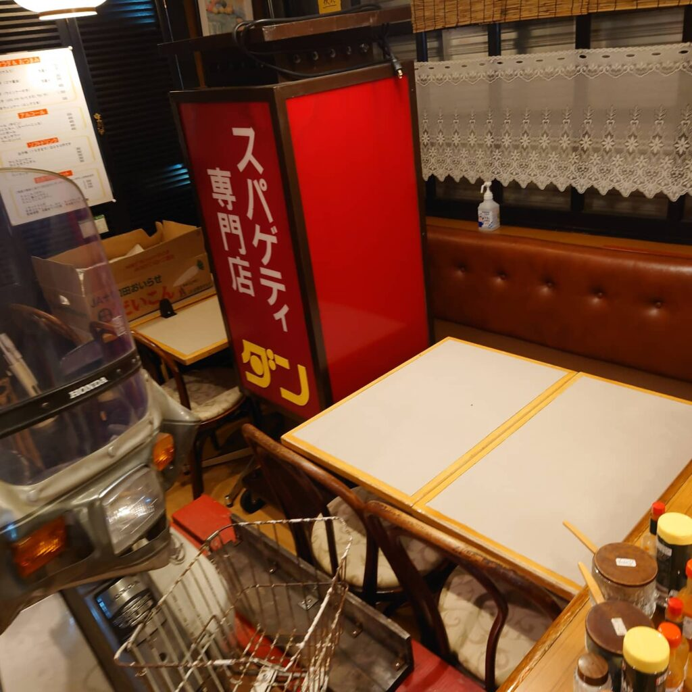
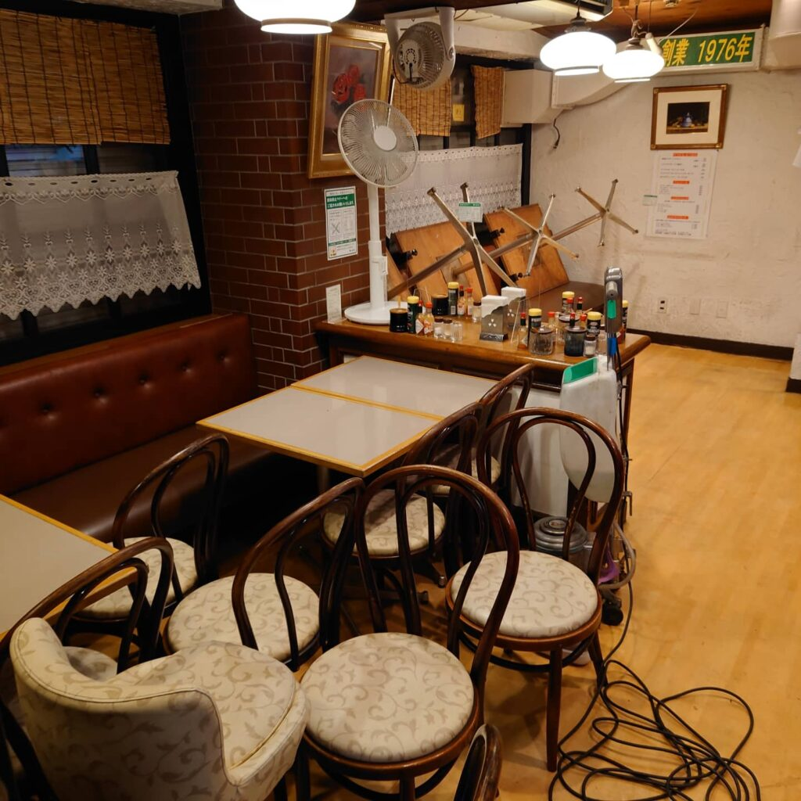
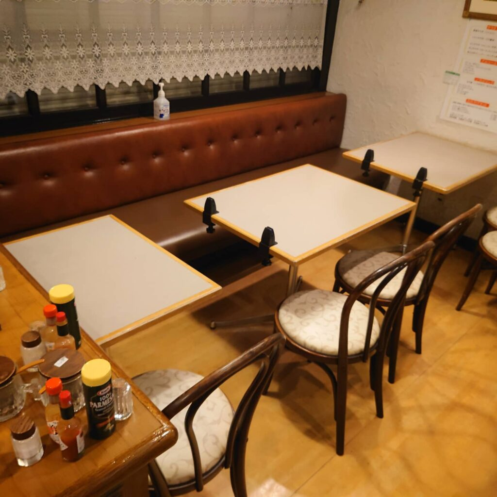
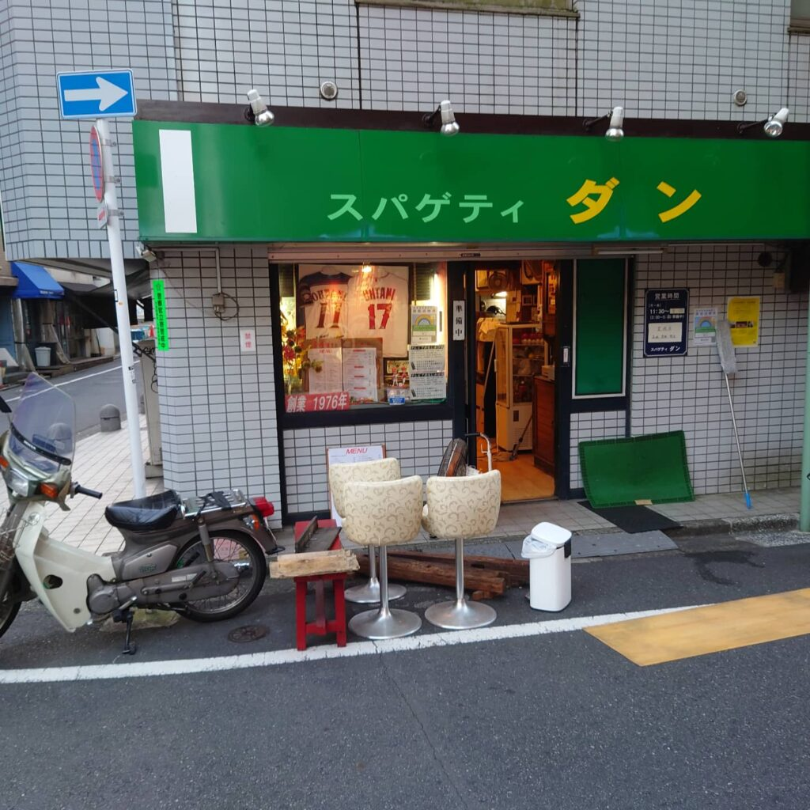
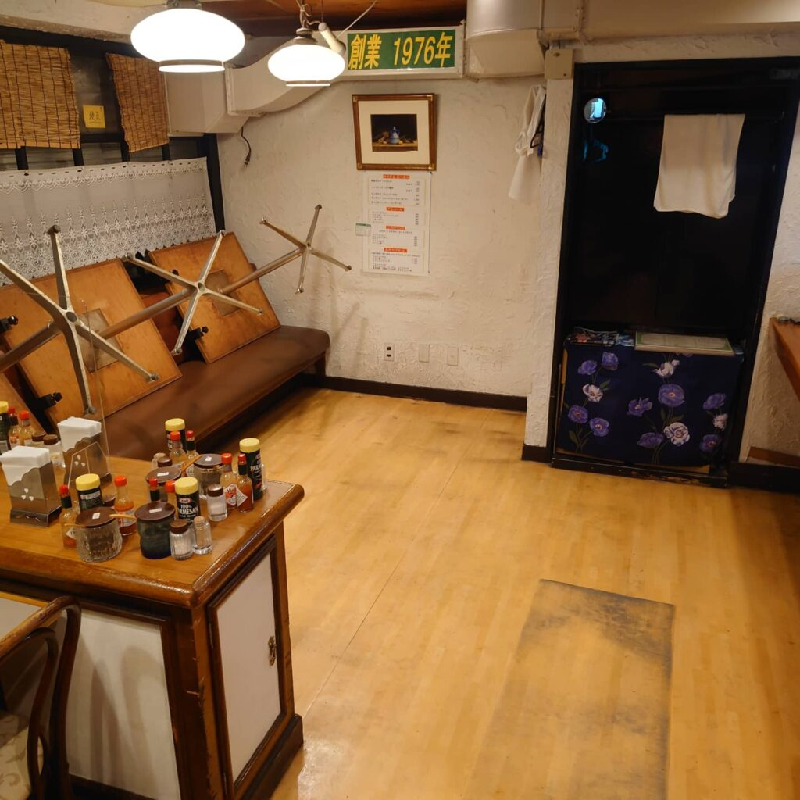
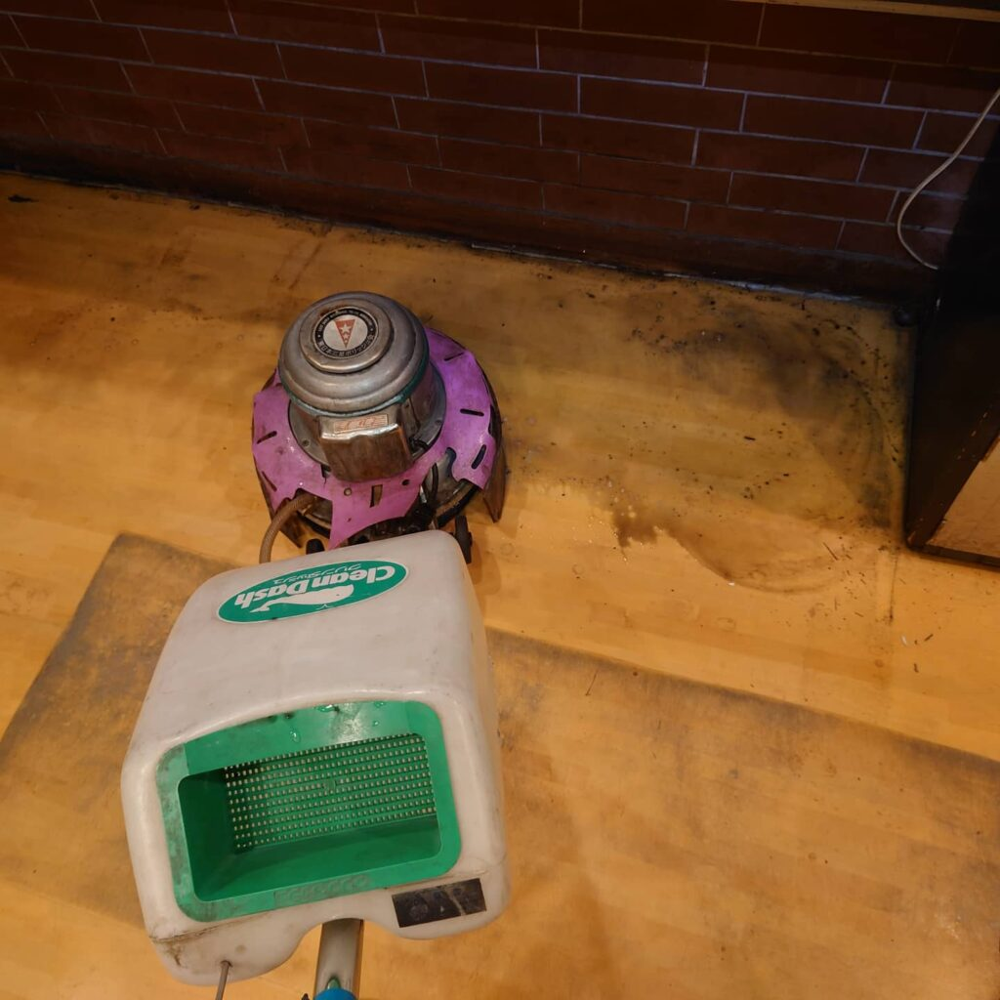
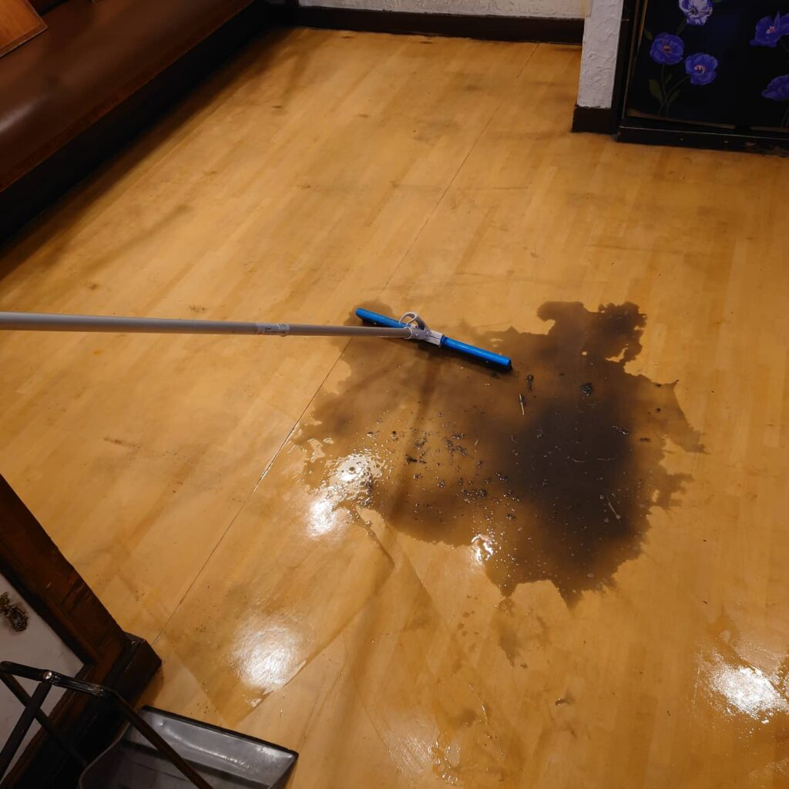
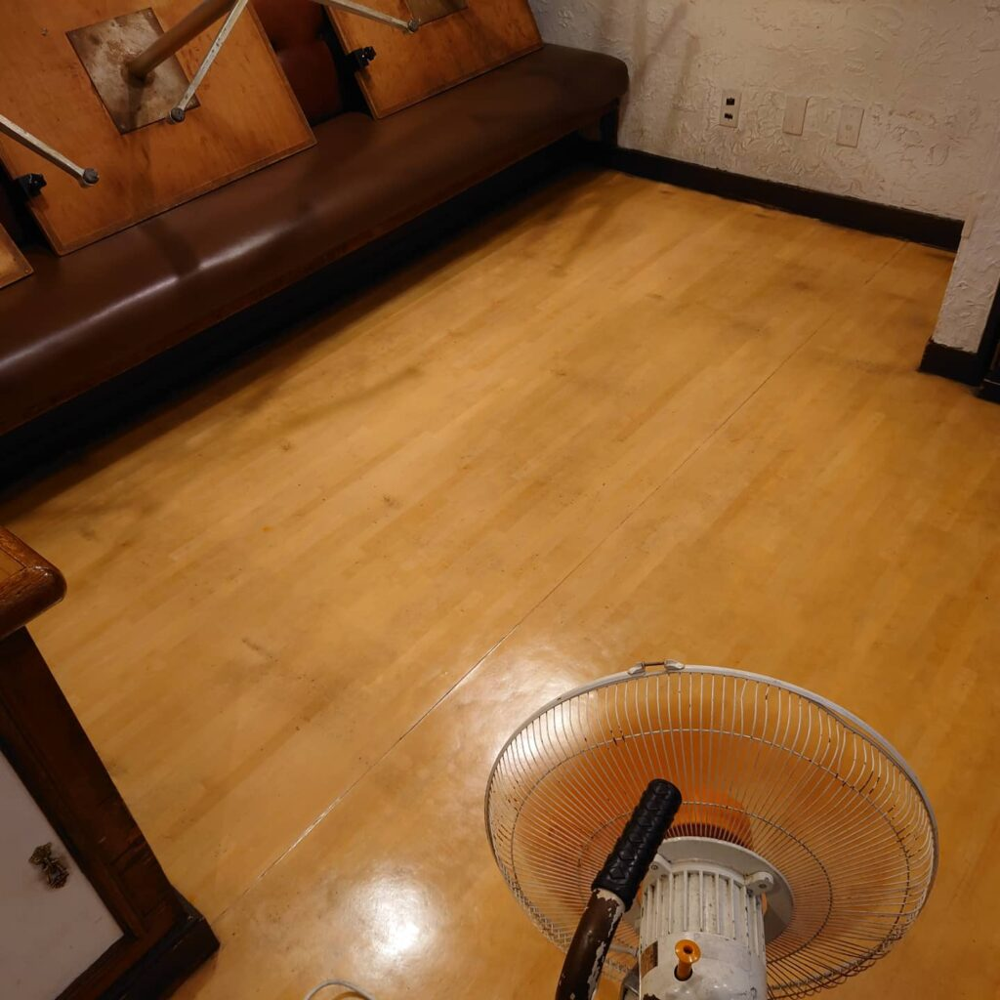
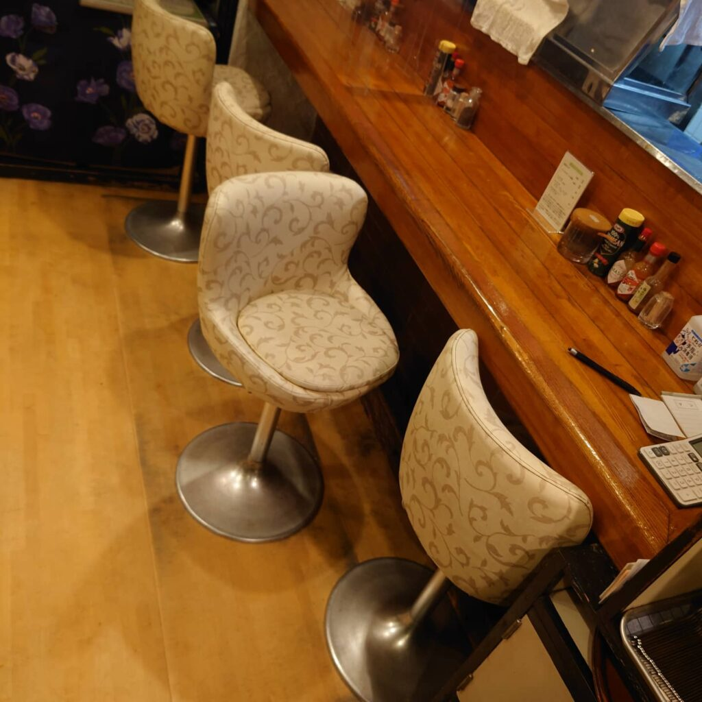

目黒駅前 人気のスパゲッティー店のクリーニングをしております。

目黒駅前にある行列ができる人気のスパゲッティー店。毎年こちらの人気店舗様の床洗浄クリーニングをしております。
飲食店様の床はどうしても油脂汚れが堆積してベトベトしていますので、油脂堆積汚れ除去専用薬剤を用いてキレイさっぱりと磨き上げしております! 人気のお店なので、早朝の開店前にワックス乾燥処理が完了するように工夫しております!イタリアン料理店、フレンチ料理店、オムライス専門店など目黒駅前の人気のお店様をクリーニングしております。







